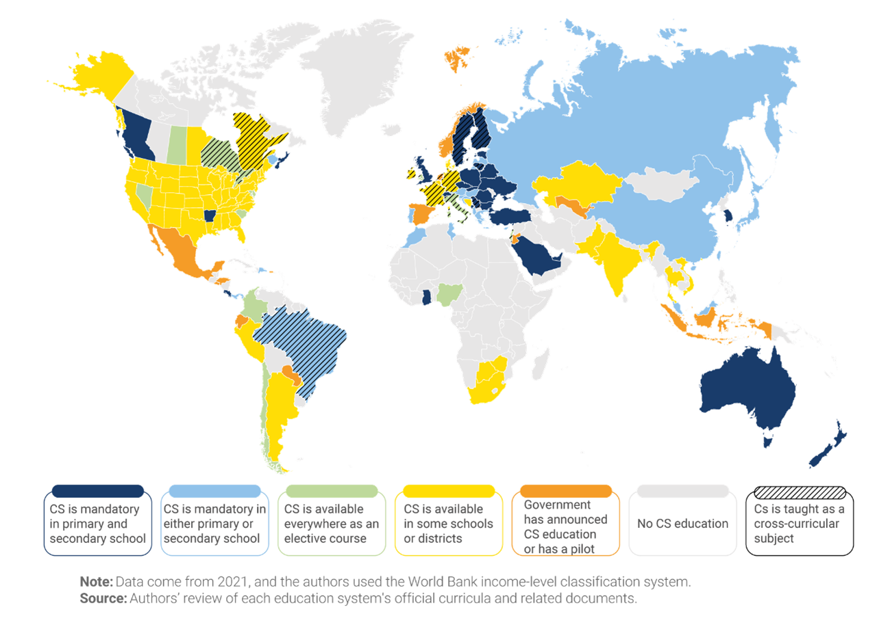
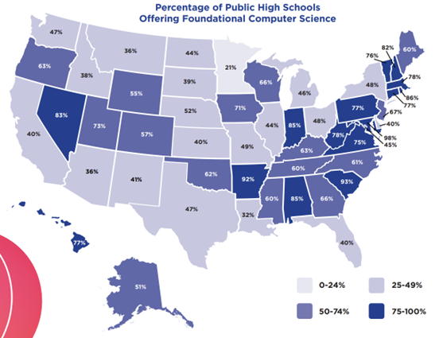
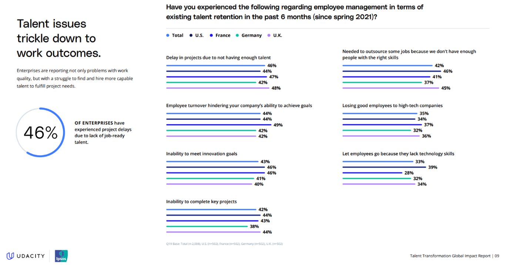
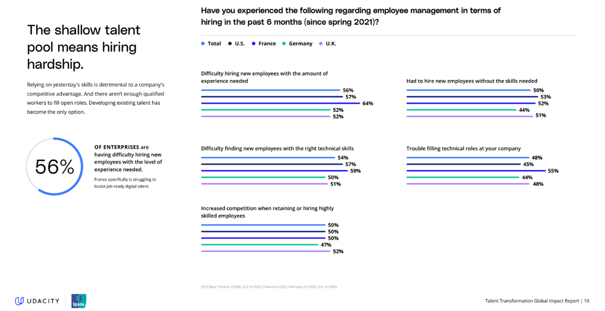
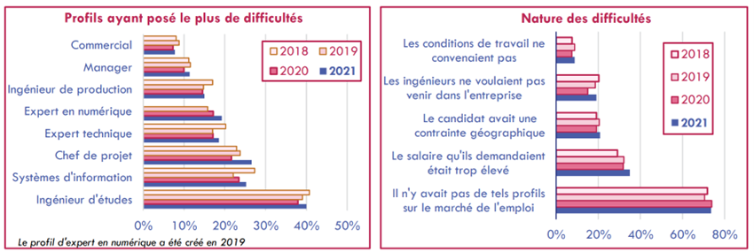
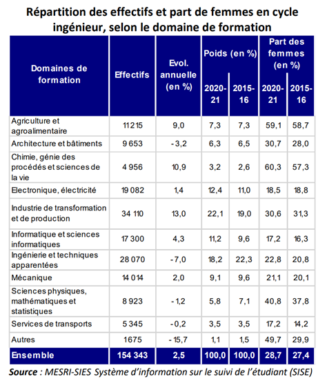

L'éducation nationale a failli. Elle a montré, en ministère de granite, qu'il faut s'armer
de patience
pour espérer y modeler la moindre nouvelle discipline, aussi louables soient les intentions. C'est
ainsi
qu'après quinze années de pédagogie, d'affrontements idéologiques, le ministère a cédé pour
introduire
l'informatique au programme. Cependant, cette entrée dans les manuels scolaires ne semble pas pour
autant lui donner la même légitimité que les autres sciences, comme le soulignent Michel Volle et
Maurice Nivat, respectivement économiste et chercheur en informatique.

Ainsi, par souci de souveraineté numérique et afin de répondre à la demande toujours croissante des entreprises, la France se doit d'être plus ambitieuse. Dans un premier temps, nous nous intéresserons à l'importance de l'informatique et à son apprentissage, puis nous discuterons des études et avancées effectuées par le ministère de l'Education nationale sur l'informatique, nous constaterons alors l'état du marché du travail en informatique français avant de détailler une proposition visant à améliorer la formation à l'informatique en France.
L'informatique est ainsi devenue une science qui, comme toutes les autres, possède des concepts,
des
règles et des méthodes. Elle n'a cependant pas encore droit de cité dans l'enseignement
secondaire
et elle est mal traitée dans les écoles d'ingénieurs. Ne serait-il pas pourtant normal qu'elle y
occupe une place comparable à celle qu'elle tient dans le système productif ?
Ainsi, par souci de souveraineté numérique et afin de répondre à la demande toujours croissante des entreprises, la France se doit d'être plus ambitieuse. Dans un premier temps, nous nous intéresserons à l'importance de l'informatique et à son apprentissage, puis nous discuterons des études et avancées effectuées par le ministère de l'Education nationale sur l'informatique, nous constaterons alors l'état du marché du travail en informatique français avant de détailler une proposition visant à améliorer la formation à l'informatique en France.
L'informatique, le nouveau dénominateur
Est-ce si important d'apprendre l'informatique à tous ?
Du point de vue pratique, l'informatique est vue et utilisée par beaucoup comme un outil. Un architecte
peut concevoir ses plans via des logiciels, un comptable va en utiliser d'autres, un biologiste
moléculaire va peut-être même programmer pour sa recherche, et cætera. Ces usages sont relativement
nouveaux mais pas moins nombreux, on se rend compte qu'il faut a minima pouvoir l'utiliser dans beaucoup
de cas.
Bien que l'on puisse apprendre par soi-même l'informatique et que les élèves y soient déjà souvent familiarisés, inclure systématiquement son apprentissage améliorerait l'égalité des chances. De plus, donner à tous l'accès au matériel nécessaire dans les écoles permettrait aux élèves d'aborder cette discipline devenue incontournable dans la vie active dès leur plus jeune âge.
Au-delà du développement de compétences informatiques diverses, un cours obligatoire permet également, s'il est correctement dispensé, de faire naître chez les élèves une appétence pour la matière en plus de la capacité de poursuivre des spécialités et études en informatique.
Bien que l'on puisse apprendre par soi-même l'informatique et que les élèves y soient déjà souvent familiarisés, inclure systématiquement son apprentissage améliorerait l'égalité des chances. De plus, donner à tous l'accès au matériel nécessaire dans les écoles permettrait aux élèves d'aborder cette discipline devenue incontournable dans la vie active dès leur plus jeune âge.
Au-delà du développement de compétences informatiques diverses, un cours obligatoire permet également, s'il est correctement dispensé, de faire naître chez les élèves une appétence pour la matière en plus de la capacité de poursuivre des spécialités et études en informatique.
Quid du supérieur ?
Les formations scientifiques postbac recrutent des « forts en maths », même si elles forment des « forts
en informatique ». Cela s'illustre notamment avec les grandes écoles post-prépa qui recrutent toujours
avec une épreuve de mathématiques, quelle que soit la suite du parcours ou même les cours une fois
admis.
Prenons l'exemple d'un parcours en biologie : un étudiant souhaitant poursuivre des études de biologie à l'Ecole Polytechnique, qui propose par ailleurs des cursus orientés biologie et chimie, devra tout d'abord prouver son niveau en mathématiques alors même que la plupart de ces notions ne feront pas l'objet d'un besoin ultérieur. Les notions mathématiques appliquées machinalement lors du concours d'entrée ne serviront pas à l'étudiant puisque ce dernier au cours de sa carière travaillera dans un domaine où la création de méthodes génériques pour déterminer les solutions des polynômes de degrés n ne sera pas nécessaire. Néanmoins, il devra avoir toutes les bases pour commencer et comprendre l'utilité de ce travail pour prétendre aux grandes écoles : elles recrutent des « forts en maths » mais forment à tout.
Comme le souligne un professeur de Télécom Paris à propos de l'intérêt des mathématiques, beaucoup restent encore attachés à conserver cette discipline comme dénominateur commun. L'argument phare étant l' « esprit mathématique » et le raisonnement qui l'accompagne.
En effet, ce raisonnement implacable permettrait de venir à bout de n'importe quel problème, serait transposable à n'importe quelle autre discipline, incluant l'informatique, et responsable en partie de la réussite de ceux l'ayant développé durant deux années de classe préparatoire intenses.
Mais alors, qu'en est-il de ceux qui n'ont pas fait "prépa mathématiques" ? Restent-ils sur le banc de touche en laissant les prépas mathématiques réussir ?
Nous sommes parmi les plus mauvais d'Europe en mathématiques, comme en témoigne le l'étude internationale TIMSS 2019. Peut-être pouvons-nous expliquer le manque d'étudiants formés en informatique et par conséquent de main d'œuvre dans cette filière ainsi : nous sommes mauvais en mathématiques, nous n'avons donc pas assez de candidats suffisamment bons pour des filières informatiques recrutant via des concours de mathématiques.
Si le raisonnement mathématique existe, le raisonnement informatique ne pourrait-il pas également exister?
Appelons-le même, démarche informatique, ou bien, comment identifier, résoudre, et vérifier la résolution d'un problème. C'est principalement ce que font les développeurs informatiques. Ils sont capables de cerner les caractéristiques d'une fonctionnalité à développer, la développer, et vérifier automatiquement que celle-ci fonctionne correctement. Cette démarche s'apprend en appliquant l'informatique à des problèmes concrets et peut elle aussi être transposée à d'autres types de problèmes.
L'apprentissage de l'informatique, en plus de transmettre un raisonnement basé sur la résolution de problèmes concrets, apporte également une compétence bien réelle. Son champ d'application est large, direct et emploie toujours plus de main d'oeuvre. Un informaticien n'éprouve donc pas de difficulté à trouver un emploi, tandis qu'un mathématicien doit préalablement choisir l'application dans laquelle il souhaite s'engager avant de savoir si celle-ci embauche.
Les grandes écoles n'ont que récemment commencé à intégrer de l'informatique dans leurs concours universitaires et peuvent désormais recruter les étudiants issus de la nouvelle classe préparatoire de mathématiques et informatique existant depuis 2021. Les étudiants devront alors découvrir l'informatique avant d'entrer en grande école d'informatique, ce qui est plus cohérent.
Cette amélioration ne fait pas pour autant de l'informatique le nouveau dénominateur d'entrée pour les grandes écoles ou licences d'informatique puisque que la discrimination par le niveau en mathématiques reste de mise et est toujours bien ancrée chez les professeurs.
Bien que nous ayons progressé sur l'introduction d'enseignements numériques au collège et lycée, nous devons progresser en permettant encore plus aux élèves de découvrir et s'accomplir en informatique. Leur offrant ainsi un choix plus avisé de leur formation post-bac.
Prenons l'exemple d'un parcours en biologie : un étudiant souhaitant poursuivre des études de biologie à l'Ecole Polytechnique, qui propose par ailleurs des cursus orientés biologie et chimie, devra tout d'abord prouver son niveau en mathématiques alors même que la plupart de ces notions ne feront pas l'objet d'un besoin ultérieur. Les notions mathématiques appliquées machinalement lors du concours d'entrée ne serviront pas à l'étudiant puisque ce dernier au cours de sa carière travaillera dans un domaine où la création de méthodes génériques pour déterminer les solutions des polynômes de degrés n ne sera pas nécessaire. Néanmoins, il devra avoir toutes les bases pour commencer et comprendre l'utilité de ce travail pour prétendre aux grandes écoles : elles recrutent des « forts en maths » mais forment à tout.
Comme le souligne un professeur de Télécom Paris à propos de l'intérêt des mathématiques, beaucoup restent encore attachés à conserver cette discipline comme dénominateur commun. L'argument phare étant l' « esprit mathématique » et le raisonnement qui l'accompagne.
En effet, ce raisonnement implacable permettrait de venir à bout de n'importe quel problème, serait transposable à n'importe quelle autre discipline, incluant l'informatique, et responsable en partie de la réussite de ceux l'ayant développé durant deux années de classe préparatoire intenses.
Mais alors, qu'en est-il de ceux qui n'ont pas fait "prépa mathématiques" ? Restent-ils sur le banc de touche en laissant les prépas mathématiques réussir ?
Nous sommes parmi les plus mauvais d'Europe en mathématiques, comme en témoigne le l'étude internationale TIMSS 2019. Peut-être pouvons-nous expliquer le manque d'étudiants formés en informatique et par conséquent de main d'œuvre dans cette filière ainsi : nous sommes mauvais en mathématiques, nous n'avons donc pas assez de candidats suffisamment bons pour des filières informatiques recrutant via des concours de mathématiques.
Si le raisonnement mathématique existe, le raisonnement informatique ne pourrait-il pas également exister?
Appelons-le même, démarche informatique, ou bien, comment identifier, résoudre, et vérifier la résolution d'un problème. C'est principalement ce que font les développeurs informatiques. Ils sont capables de cerner les caractéristiques d'une fonctionnalité à développer, la développer, et vérifier automatiquement que celle-ci fonctionne correctement. Cette démarche s'apprend en appliquant l'informatique à des problèmes concrets et peut elle aussi être transposée à d'autres types de problèmes.
L'apprentissage de l'informatique, en plus de transmettre un raisonnement basé sur la résolution de problèmes concrets, apporte également une compétence bien réelle. Son champ d'application est large, direct et emploie toujours plus de main d'oeuvre. Un informaticien n'éprouve donc pas de difficulté à trouver un emploi, tandis qu'un mathématicien doit préalablement choisir l'application dans laquelle il souhaite s'engager avant de savoir si celle-ci embauche.
Les grandes écoles n'ont que récemment commencé à intégrer de l'informatique dans leurs concours universitaires et peuvent désormais recruter les étudiants issus de la nouvelle classe préparatoire de mathématiques et informatique existant depuis 2021. Les étudiants devront alors découvrir l'informatique avant d'entrer en grande école d'informatique, ce qui est plus cohérent.
Cette amélioration ne fait pas pour autant de l'informatique le nouveau dénominateur d'entrée pour les grandes écoles ou licences d'informatique puisque que la discrimination par le niveau en mathématiques reste de mise et est toujours bien ancrée chez les professeurs.
Bien que nous ayons progressé sur l'introduction d'enseignements numériques au collège et lycée, nous devons progresser en permettant encore plus aux élèves de découvrir et s'accomplir en informatique. Leur offrant ainsi un choix plus avisé de leur formation post-bac.
Notre cher ministère de l'éducation nationale
Déploiement du numérique dans l'éducation
Du côté de l'Education nationale, les avancées sont timides mais des progrès importants ont été réalisés
ces dix dernières années. Le premier plan numérique datant de 1985 et intitulé « Informatique pour tous
» devait apporter les premiers micro-ordinateurs et installer un accès à internet dans les
établissements scolaires français. Ce fut le top départ de notre ministère de l'éducation nationale dans
la ruée vers le numérique. Hélas, chaque foulée pour déployer le numérique et son enseignement en France
Il semblerait ainsi que nous soyons dépassés, mais l'espoir subsiste. Ce même rapport expose 25 propositions qui devraient remettre notre enseignement numérique en selle. Néanmoins, nous semblons partir de loin puisque certaines de ces propositions évoquent une France en retard de quelques tours de terrains technologiques. Nous devrions par exemple « cartographier de manière régulière l'état de la connexion des établissements scolaires à internet » d'après la 10ème proposition de ce rapport. Soyons rassurés ou non, 80% des écoles primaires disposaient d'internet dans plus de la moitié de leurs classes et nous avions 12,5 vidéos projecteurs pour 1000 élèves de primaire en 2018. En outre, cette même année 62,4% des collèges avaient un débit internet inférieur à 10 Mb/s : évitons de tous aller en salle informatique en même temps.
En revanche, de bonnes initiatives sont à relever, notamment les propositions 22 à 24 évoquant un encouragement par l'Etat des enseignants à créer et partager des ressources pédagogiques numériques. Ce rapport a d'ailleurs appelé à créer un CAPES et une agrégation d'informatique : il était temps. Aujourd'hui ils existent et heureusement : ce rapport souligne que nous n'aurions pas pu enseigner les nouveaux programmes numériques de l'éducation nationale sans professeurs formés pour. Voici les grandes lignes qui poussent l'éducation nationale dans ce sens : « La création de ces nouveaux concours apparaît, en outre, nécessaire pour asseoir le statut disciplinaire de l'informatique. Les mentions complémentaires pour les professeurs des autres disciplines ne devraient, pour autant, nullement être abandonnées, dans la mesure où l'informatique revêt un caractère transdisciplinaire. » (Rapport d'information du 10 octobre 2018, Assemblée Nationale, présidé et rapporté par M. Bruno STUDER). En lisant ces lignes perdues en bas de la page 48, il apparaît un décalage avec les autres mesures bien moins ambitieuses à l'égard de l'enseignement de l'informatique : on souhaite apprendre à se servir de l'outil numérique plutôt que de créer ses propres outils, programmes, sites, applications.... Ces cas-là ne sont abordés que trop tardivement en première pour les plus intéressés. Et cela semble être déjà mieux qu'avant la rentrée 2016 où ils n'existaient qu'en terminale, avec la spécialité ISN (Informatique et Sciences du Numérique).
« s'est révélée insuffisante en raison de la difficulté à concevoir un système durable dans un
univers
technologique qui évolue selon une loi de progrès exponentiel ».
Il semblerait ainsi que nous soyons dépassés, mais l'espoir subsiste. Ce même rapport expose 25 propositions qui devraient remettre notre enseignement numérique en selle. Néanmoins, nous semblons partir de loin puisque certaines de ces propositions évoquent une France en retard de quelques tours de terrains technologiques. Nous devrions par exemple « cartographier de manière régulière l'état de la connexion des établissements scolaires à internet » d'après la 10ème proposition de ce rapport. Soyons rassurés ou non, 80% des écoles primaires disposaient d'internet dans plus de la moitié de leurs classes et nous avions 12,5 vidéos projecteurs pour 1000 élèves de primaire en 2018. En outre, cette même année 62,4% des collèges avaient un débit internet inférieur à 10 Mb/s : évitons de tous aller en salle informatique en même temps.
En revanche, de bonnes initiatives sont à relever, notamment les propositions 22 à 24 évoquant un encouragement par l'Etat des enseignants à créer et partager des ressources pédagogiques numériques. Ce rapport a d'ailleurs appelé à créer un CAPES et une agrégation d'informatique : il était temps. Aujourd'hui ils existent et heureusement : ce rapport souligne que nous n'aurions pas pu enseigner les nouveaux programmes numériques de l'éducation nationale sans professeurs formés pour. Voici les grandes lignes qui poussent l'éducation nationale dans ce sens : « La création de ces nouveaux concours apparaît, en outre, nécessaire pour asseoir le statut disciplinaire de l'informatique. Les mentions complémentaires pour les professeurs des autres disciplines ne devraient, pour autant, nullement être abandonnées, dans la mesure où l'informatique revêt un caractère transdisciplinaire. » (Rapport d'information du 10 octobre 2018, Assemblée Nationale, présidé et rapporté par M. Bruno STUDER). En lisant ces lignes perdues en bas de la page 48, il apparaît un décalage avec les autres mesures bien moins ambitieuses à l'égard de l'enseignement de l'informatique : on souhaite apprendre à se servir de l'outil numérique plutôt que de créer ses propres outils, programmes, sites, applications.... Ces cas-là ne sont abordés que trop tardivement en première pour les plus intéressés. Et cela semble être déjà mieux qu'avant la rentrée 2016 où ils n'existaient qu'en terminale, avec la spécialité ISN (Informatique et Sciences du Numérique).
Positionnement de notre ministère à l'international
Notre ministère de l'éducation est un mauvais élève sur la question de l'enseignement de l'informatique,
comme le montre la carte ci-dessous établie par les auteurs de l'essai « Building skills for life: How
to expand and improve computer science education around the world » publié sur
Brookings.

Building skills for life: How to expand and improve computer science education around the world,
Brookings - L'enseignement de l'informatique dans les écoles à travers le monde
Des pays comme la Pologne, la Russie, la Chine ou encore l'Australie ont su voir le potentiel de cette
nouvelle science et ont pris le problème de l'enseignement de
l'informatique à bras le corps en rendant son enseignement obligatoire, parfois même durant
l'ensemble de la scolarité comme c'est le cas en Australie, Pologne ou Suède.
Le constat est donc clair, nous pouvons faire beaucoup mieux puisque d'autres le font, et qui plus est, nous sommes en retard.
On remarque tout de même que les Etats-Unis et sa Silicon Valley, gourmande en développeurs logiciels, sont loin d'être les meilleurs en termes d'éducation aux TIC (Technologies de l'Information et de la Communication). Les programmes sont imposés au niveau des états, ce qui a tendance à créer une disparité des niveaux à l'échelle des Etats-Unis comme le souligne le rapport d'état de l'enseignement de l'informatique aux Etats-Unis.
Dans la carte suivante extraite du même rapport, on remarque également que ce ne sont pas tous les lycées qui proposent des cours d'informatique au sein d'un même état. Ce problème est par ailleurs suivi de près par les dirigeants d'entreprises du numérique américaines. Ce rapport liste par ailleurs un grand nombre de soutiens au développement de l'éducation au numérique parmi ceux-là.
Le constat est donc clair, nous pouvons faire beaucoup mieux puisque d'autres le font, et qui plus est, nous sommes en retard.
On remarque tout de même que les Etats-Unis et sa Silicon Valley, gourmande en développeurs logiciels, sont loin d'être les meilleurs en termes d'éducation aux TIC (Technologies de l'Information et de la Communication). Les programmes sont imposés au niveau des états, ce qui a tendance à créer une disparité des niveaux à l'échelle des Etats-Unis comme le souligne le rapport d'état de l'enseignement de l'informatique aux Etats-Unis.
Dans la carte suivante extraite du même rapport, on remarque également que ce ne sont pas tous les lycées qui proposent des cours d'informatique au sein d'un même état. Ce problème est par ailleurs suivi de près par les dirigeants d'entreprises du numérique américaines. Ce rapport liste par ailleurs un grand nombre de soutiens au développement de l'éducation au numérique parmi ceux-là.

Carte extraite du sixième rapport d'état de l'enseignement de l'informatique aux Etats-Unis « 2022
State of Computer Science Education: Understanding Our National Imperative ». Pourcentage de lycées
publiques proposant des cours d'introduction à l'informatique.
Tensions dans le marché du travail du numérique en France
Après les études vient le temps du travail. Heureusement pour nos jeunes diplômés, s'il y a bien un
secteur qui ne connaît pas le chômage en France, c'est celui de l'informatique. Nul
besoin de traverser la rue, c'est le recruteur qui viendra vous chercher à condition de savoir coder
bien sûr. A tel
point qu'en 2022, le taux de chômage du secteur approchait 3,2% (d'après une enquête IESF). Les
employeurs
éprouvent alors d'importantes difficultés à recruter comme le témoignent les deux diapositives
suivantes.
(Udacity
Ipsos Talent Transformation Global Impact Report).

Enquête menée par Udacity : « La menace ultime des entreprises ? Le manque de talents. ». Les
problèmes de talents se répercutent sur les résultats.

Enquête menée par Udacity : « La menace ultime des entreprises ? Le manque de talents. ». Le manque
de talents rend leur recrutement ardu.
Rapport
Ces études montrent que les entreprises françaises, comparées aux entreprises britanniques ou
américaines, ont plus de difficultés à recruter en général et dans le cas de certains experts techniques
ou
postes spécifiques.
L'enquête de l'IESF présente deux graphiques permettant de mieux comprendre les difficultés éprouvées en France.
L'enquête de l'IESF présente deux graphiques permettant de mieux comprendre les difficultés éprouvées en France.

Difficultés de recrutement des ingénieurs en France, selon l'enquête annuelle 2022 de l'IESF.
Ainsi nous manquons notamment d'ingénieurs en informatique, de chefs de projets et d'experts en
numérique. Ces profils, pour la grande majorité, n'existent pas sur le marché de l'emploi. Certainement
auront-ils déjà été embauchés et les formations n'en produisant pas assez, non n'en avons plus.
Nous éprouvons en France une rupture de stock d'informaticiens, d'experts en numérique, de chefs de projets. Dans une période où le secteur est en pleine expansion et demande toujours plus de main d'œuvre, nous devons rétablir au plus vite la production d'ingénieurs informaticiens. Dans le cas contraire, la filière numérique comptant créer environ 1,75 millions d'emplois dans les huit prochaines années (d'après le figaro Etudiant, Mars 2022), pourrait se retrouver en péril, mise en incapacité de produire. L'urgence est alors à la formation de nouveaux informaticiens mais pas seulement : il faut empêcher à tout prix l'éxode des "cerveaux".
Nous éprouvons en France une rupture de stock d'informaticiens, d'experts en numérique, de chefs de projets. Dans une période où le secteur est en pleine expansion et demande toujours plus de main d'œuvre, nous devons rétablir au plus vite la production d'ingénieurs informaticiens. Dans le cas contraire, la filière numérique comptant créer environ 1,75 millions d'emplois dans les huit prochaines années (d'après le figaro Etudiant, Mars 2022), pourrait se retrouver en péril, mise en incapacité de produire. L'urgence est alors à la formation de nouveaux informaticiens mais pas seulement : il faut empêcher à tout prix l'éxode des "cerveaux".
Travailler en France, la douce amertume
Les talents du numérique français ont alors un choix cornélien à faire : rester en France après leur
formation ou
faire leurs valises et vivre l'aventure à l'étranger, sachant que le salaire d'entrée en France en
2023 est de
35 000 euros par an en
moyenne pour un développeur logiciel débutant et de 91 000 euros par
an à San Francisco pour la même expérience. Pour réaliser une comparaison cohérente, il est
certes nécessaire de
comparer le
niveau de vie entre la région parisienne et San Francisco, mais également de comparer les
perspectives d'évolution de carrière et salaire. En France, on peut espérer en moyenne atteindre en
médiane en 2023, 63 000 euros par an pour le travail d'un chef d'équipe de développement
logiciel, ce
qui correspond à 170 000 euros par an pour la médiane des salaires de ce poste à San Francisco.
On ne peut
donc pas s'étonner qu'une firme Américaine ayant les moyens de ses ambitions attire d'avantage que nos
entreprises bien françaises avec leurs grilles de salaires françaises elles aussi.
Ainsi, si nous souhaitons garder nos ingénieurs informatiques en France, il faudrait que nous leur donnions des raisons suffisantes pour rester, et cela passe par un alignement des salaires sur ceux de nos concurrents.
Cela va sans dire, les conditions de vie et le système social français expliquent assez bien les différences de salaire. Cependant, certains en arrivent à travailler en France pour des entreprises Américaines à distance, depuis chez eux, et en étant imposés par les deux pays, cela reste plus intéressant que de travailler pour un employeur français, en France.
Par rapport aux entreprises françaises, les entreprises américaines en informatique sont bien plus attrayantes, notamment par les salaires, et n'éprouveront donc pas de difficultés comparables à recruter leurs talents du numériques. En effet, dans un rapport d'information adressé au Sénat en 2000, le constat d'une fuite de main d'oeuvre était déjà réalisé.
Le problème de formation au numérique en France reste donc entier, car même si nos amis Américains ne
s'en sortent pas beaucoup mieux, le soft power et l'hégémonie Américaine dans le domaine leur donne un
avantage que nous n'avons pas nécessairement : ils peuvent recruter des étrangers, comparé à nos
cerveaux qui partent parfois sans retour.
Ainsi, si nous souhaitons garder nos ingénieurs informatiques en France, il faudrait que nous leur donnions des raisons suffisantes pour rester, et cela passe par un alignement des salaires sur ceux de nos concurrents.
Cela va sans dire, les conditions de vie et le système social français expliquent assez bien les différences de salaire. Cependant, certains en arrivent à travailler en France pour des entreprises Américaines à distance, depuis chez eux, et en étant imposés par les deux pays, cela reste plus intéressant que de travailler pour un employeur français, en France.
Par rapport aux entreprises françaises, les entreprises américaines en informatique sont bien plus attrayantes, notamment par les salaires, et n'éprouveront donc pas de difficultés comparables à recruter leurs talents du numériques. En effet, dans un rapport d'information adressé au Sénat en 2000, le constat d'une fuite de main d'oeuvre était déjà réalisé.
«
Face à une telle pénurie, l'émigration de plusieurs milliers de jeunes ingénieurs à l'étranger
prend toute son importance. Rapportés aux 36.000 emplois d'informaticiens pourvus l'année
dernière selon le Syntec, le départ des quelques 7 000 Français travaillant dans la seule
Silicon Valley ne peut pas laisser indifférent.
».
Apprenti informaticien, es-tu là ?
Les formations ne sont pourtant pas moins remplies qu'avant comme l'indique une note du ministère de
l'enseignement supérieur : « À la rentrée 2020, 154 300 étudiants sont inscrits en cycle ingénieur. Cet
effectif progresse de 2,5 % en un an et de près de 20 % en cinq ans » (Notes Flash du SIES n°13, Juin
2021). Celles-ci sont en réalité en forte croissance ces cinq dernières années comme le témoigne le
tableau suivant.

Répartition des effectifs et part de femmes en cycle ingénieur, selon le domaine de formation -
(Notes Flash du SIES n°13)
Nous le constatons dans le tableau ci-dessus, les effectifs d'étudiants en informatique est bien
augmentation dans les cycles ingénieurs. Pour autant, comme nous l'avons vu, nous n'avons pas assez de
main d'œuvre sortant de ces formations. Il nous faut donc plus de capacité de formation mais aussi plus
de candidats pour remplir ces nouvelles classes.
Nous avons donc plusieurs progrès à faire, plus de formations dans l'enseignement supérieur et plus de candidats à celles-ci, donc des lycéens et lycéennes ayant de l'appétence pour l'informatique. Il faut convaincre ces jeunes de faire une carrière en informatique, mais savent-ils vraiment ce que c'est ?
Nous avons donc plusieurs progrès à faire, plus de formations dans l'enseignement supérieur et plus de candidats à celles-ci, donc des lycéens et lycéennes ayant de l'appétence pour l'informatique. Il faut convaincre ces jeunes de faire une carrière en informatique, mais savent-ils vraiment ce que c'est ?
Ma propre expérience m'indique que beaucoup d'étudiants parvenus à Télécom Paris ont sélectionné
cette
école d'après son classement, meilleure école à laquelle ils puissent être admis. J'ai constaté que
certains ne savaient pas coder en arrivant, ce que je trouve dommage car pour poursuivre des études
d'informatique, ça aide
d'avoir
les bases. Et ça aide encore plus d'avoir une passion pour la programmation. Cette passion ne
pouvait
être développée au lycée, bien que la filière STI2D existait à mon passage et qu'il y avait même la
spécialité ISN, que j'ai suivi (Informatique et Sciences du Numérique) en terminale scientifique. De
ce
que j'ai vu, si vous souhaitiez réussir et tenter votre chance au concours des grandes écoles, il
vous
fallait entrer dans une bonne classe préparatoire MPSI (Mathématiques, Physique, Sciences de
l'Ingénieur),
autrement
dit, faire terminale scientifique, spécialité mathématique, il n'y avait pas vraiment d'autres
combinaisons dans les mentalités. Ces fameuses prépas de mathématiques permettent de prétendre aux
concours et sont considérées comme la voie royale des grandes écoles comme Polytechnique, les ENS
(Ecole
Normale Supérieure), CentraleSupélec, Télécom Paris, et j'en passe. Ces écoles sont très réputées
pour
leur niveau en informatique. Il est donc bien impossible de passer par des filières ou spécialités
comportant plus d'informatique si l'on montre quelconque ambition pour ces écoles qui forment
pourtant
notamment, et selon les cursus, surtout, à de l'informatique.
Faisons du numérique un pilier de l'éducation au même titre que le français ou les mathématiques
Ce discours étant déjà bien teinté d'opinion, continuons franchement avec une proposition : gagner la
course au numérique en France. Nous devrions rompre avec nos démarches actuelles et devenir tous
ensemble des techniciens du numérique. L'informatique n'est pas une machine ni un outil, c'est une
science et nous devrions tous le reconnaître. Mais cette compétence, simultanément théorique et
expérimentale, à l'instar des mathématiques, de la physique, de la géologie, biologie, chimie ou de la
sociologie, embauche en permanence. Il nous faut des informaticiens, partout et ça fait longtemps que
c'est le cas.
Pour rivaliser avec les autres puissances étrangères, protéger nos données à l'échelle de l'Europe, disposer de nos propres infrastructures numériques, concurrencer les plus grandes compagnies. Il nous faut des développeur logiciels, serveurs, des administrateurs systèmes et réseaux, des intégrateurs, des développeurs d'application mobiles et web, des développeurs spécialisés en calcul parallèle, en cybersécurité, en bases de données, en 3D, en systèmes embarqués, en automatique, en interfaces hommes-machines, en intelligences artificielle, en cryptographie. Il nous faut des professeurs dans les universités et lycées pour les former et dans nos collèges et écoles pour les y éveiller.
Nos élèves doivent pouvoir aborder le numérique pour l'apprécier et choisir de se spécialiser au lycée. C'est pour cette raison que nous devons ajouter des cours d'informatique dès le CE 2, pour se familiariser avec la création numérique dès cet âge-là et non pas uniquement au lycée comme c'est le cas aujourd'hui. Les enseignements de programmation avec du code devraient commencer a minima en classe de 6ème, n'empêchant pas de commencer l'algorithmie plus tôt au CM 1 et CM 2 sous des formes plus abordables et ludiques. Ainsi, les évaluations nationales du niveau des écoliers devraient comporter un test lié aux enseignements d'informatique permettant de juger de leur progression d'année en année au même titre que les mathématiques ou le français. Le brevet des collèges nécessite une épreuve d'informatique pour attester du niveau des collégiens et pousser à l'étude de cette discipline. Développer un raisonnement informatique pour résoudre un problème est trop utile pour que les nouvelles générations passent à côté de sa maîtrise.
Les élèves familiarisés à l'informatique par ce programme plus ambitieux, sont aptes à choisir et poursuivre des études d'informatique dont le niveau pourra être renforcé fort de ces étudiants sachant déjà programmer quelque peu voire beaucoup selon les profils et leur appétence pour la discipline. Ainsi, nous serons obligés d'ouvrir de nouvelles licences et masters d'informatique pour accueillir les futurs techniciens du numérique français. De surcroît, ces derniers seront peut-être mieux formés que les précédents et plus passionnés.
Nous aurons alors réussi un tour de force long d'au moins quinze années à partir de l'application de la réforme : inonder le pays de jeunes informaticiens, prêts à prendre la relève sur nos projets numériques actuels et lancer ceux de demain.
Pour rivaliser avec les autres puissances étrangères, protéger nos données à l'échelle de l'Europe, disposer de nos propres infrastructures numériques, concurrencer les plus grandes compagnies. Il nous faut des développeur logiciels, serveurs, des administrateurs systèmes et réseaux, des intégrateurs, des développeurs d'application mobiles et web, des développeurs spécialisés en calcul parallèle, en cybersécurité, en bases de données, en 3D, en systèmes embarqués, en automatique, en interfaces hommes-machines, en intelligences artificielle, en cryptographie. Il nous faut des professeurs dans les universités et lycées pour les former et dans nos collèges et écoles pour les y éveiller.
Nos élèves doivent pouvoir aborder le numérique pour l'apprécier et choisir de se spécialiser au lycée. C'est pour cette raison que nous devons ajouter des cours d'informatique dès le CE 2, pour se familiariser avec la création numérique dès cet âge-là et non pas uniquement au lycée comme c'est le cas aujourd'hui. Les enseignements de programmation avec du code devraient commencer a minima en classe de 6ème, n'empêchant pas de commencer l'algorithmie plus tôt au CM 1 et CM 2 sous des formes plus abordables et ludiques. Ainsi, les évaluations nationales du niveau des écoliers devraient comporter un test lié aux enseignements d'informatique permettant de juger de leur progression d'année en année au même titre que les mathématiques ou le français. Le brevet des collèges nécessite une épreuve d'informatique pour attester du niveau des collégiens et pousser à l'étude de cette discipline. Développer un raisonnement informatique pour résoudre un problème est trop utile pour que les nouvelles générations passent à côté de sa maîtrise.
Les élèves familiarisés à l'informatique par ce programme plus ambitieux, sont aptes à choisir et poursuivre des études d'informatique dont le niveau pourra être renforcé fort de ces étudiants sachant déjà programmer quelque peu voire beaucoup selon les profils et leur appétence pour la discipline. Ainsi, nous serons obligés d'ouvrir de nouvelles licences et masters d'informatique pour accueillir les futurs techniciens du numérique français. De surcroît, ces derniers seront peut-être mieux formés que les précédents et plus passionnés.
Nous aurons alors réussi un tour de force long d'au moins quinze années à partir de l'application de la réforme : inonder le pays de jeunes informaticiens, prêts à prendre la relève sur nos projets numériques actuels et lancer ceux de demain.
Conclusion
Pour achever ce bref tour de l'informatique, nous pouvons saluer le ministère de l'éducation nationale
d'avoir introduit de nouveaux enseignements d'informatiques et l'encourager à continuer sur cette voie
pour éviter le rattrapage d'une autre révolution technologique.
Des progrès restent à réaliser partout mais surtout sur deux points : dans l'enseignement supérieur pour ouvrir des classes et décupler nos effectifs d'apprentis informaticiens, ainsi qu'auprès des employeurs pour contribuer à ces formations en offrant des stages et un salaire compétitif à leurs informaticiens présents et futurs.
Les salaires compétitifs sont un point clef, car ils attirent non seulement plus de profils parfois timides face à des salaires trop faibles mais permettent également sur le plus long terme de garder les talents formés en France pour le marché du travail français. Améliorer la reconnaissance de l'informatique, comme discipline à l'école ou compétence rémunérée, est la décision que l'éducation nationale, l'enseignement supérieur, la recherche et les employeurs doivent affirmer via les solutions évoquées tout au long de cette tribune.
Des progrès restent à réaliser partout mais surtout sur deux points : dans l'enseignement supérieur pour ouvrir des classes et décupler nos effectifs d'apprentis informaticiens, ainsi qu'auprès des employeurs pour contribuer à ces formations en offrant des stages et un salaire compétitif à leurs informaticiens présents et futurs.
Les salaires compétitifs sont un point clef, car ils attirent non seulement plus de profils parfois timides face à des salaires trop faibles mais permettent également sur le plus long terme de garder les talents formés en France pour le marché du travail français. Améliorer la reconnaissance de l'informatique, comme discipline à l'école ou compétence rémunérée, est la décision que l'éducation nationale, l'enseignement supérieur, la recherche et les employeurs doivent affirmer via les solutions évoquées tout au long de cette tribune.
Bibliographie
- ARCHAMBAULT Jean-Pierre, « La diversité de l'informatique à l'école », Terminal [En ligne], 113-114 | 2013, mis en ligne le 25 décembre 2014, consulté le 10 mars 2023. URL : http://journals.openedition.org/terminal/263 ; DOI : https://doi.org/10.4000/terminal.263
- BILLOUARD-FUENTES Delphine, Informatique en classe : le code est-il toujours au programme ?, [En ligne], The Conversation, 3 novembre 2022, [consulté le 10 mars 2023]. URL : https://theconversation.com/informatique-en-classe-le-code-est-il-toujours-au-programme-192103
- DONNARD Emmanuelle, « La lutte pour l'enseignement de l'informatique », une histoire particulière de l'intégration d'une innovation à l'Éducation nationale, [En ligne], Association EPI, Février 2022, [consulté le 10 mars 2023]. URL : https://www.epi.asso.fr/revue/articles/a2202f.htm
- European Commission, European Education and Culture Executive Agency, Informatics education at school in Europe, Publications Office of the European Union, 2022, [consulté le 10 mars 2023]. URL : https://data.europa.eu/doi/10.2797/268406
- FRANCOIS-PONCET Jean, La fuite des cerveaux : mythe ou réalité ?, [En ligne], RAPPORT D'INFORMATION 388 (1999-2000) - COMMISSION DES AFFAIRES ECONOMIQUES, [consulté le 10 mars 2023], URL: https://www.senat.fr/rap/r99-388/r99-388.html
- IESF, 33ème enquête sur les ingénieurs & scientifiques diplômés en France, IESF, 2022. URL : https://www.iesf.fr/shop_752-49859-5273-825/enquete-nationale-2022.html
- LAPIERRE Vincent, École : la fabrique des crétins ? Avec Jean-Paul Brighelli [entretien intégral], [En ligne], LeMediaPourTous.fr, 9 mars 2021, [consulté le 10 mars 2023]. URL : https://www.youtube.com/watch?v=YQ_82GK4yrU
- C. Lixi et G. Séroussi, Note Flash n°13, [En ligne], MESRI-SIES / Systèmes '’information et études statistiques, Juin 2021, ISSN 2108-4033, URL : https://www.enseignementsup-recherche.gouv.fr/sites/default/files/imported_files/documents/NF2021.13-_Ingenieur.num_1411881.pdf
- MERAT Victor, Le numérique, un secteur en pleine croissance mais qui peine à attirer les étudiants, [En ligne], Le Figaro Etudiant, 25 mars 2022, URL : https://etudiant.lefigaro.fr/article/le-numerique-un-secteur-en-pleine-croissance-mais-qui-peine-a-attirer-les-etudiants_5e3a4e76-ab54-11ec-a42f-520781295aa0/
- NIVAT Maurice, VOLLE Michel, « Enjeux de l'enseignement de l'informatique », Terminal [En ligne], 113-114 | 2013, mis en ligne le 25 décembre 2014, consulté le 10 mars 2023. URL : http://journals.openedition.org/terminal/264 ; DOI : https://doi.org/10.4000/terminal.264
- STUDER Bruno, Ecole dans la société du numérique, [En ligne], Rapport d'information n° 1296, 10 octobre 2018, [consulté le 10 mars 2023]. URL : https://www.assemblee-nationale.fr/dyn/15/dossiers/ecole_societe_numerique_rap-info
- TIMSS 2019, [En ligne], Ministère de l'Education nationale, [consulé le 10 mars 2023]. URL : https://www.education.gouv.fr/timss-2019-l-etude-internationale-consacree-aux-mathematiques-et-aux-sciences-11930
- VEGAS Emiliana, HANSEN Michael and FOWLER Brian, Building skills for life: How to expand and improve computer science education around the world, [En ligne], Brookings, 25 Octobre 2021, [consulté le 10 mars 2023]. URL : https://www.brookings.edu/essay/building-skills-for-life-how-to-expand-and-improve-computer-science-education-around-the-world/
- ZEYRINGER Michael, Apprentissage de la programmation informatique à l'école, [En ligne], Ressources - Hors-série n°1, Janvier 2021, [consulté le 10 mars 2023]. URL : https://inspe.univ-nantes.fr/medias/fichier/4-apprentissage-de-la-programmation-informatique-a-l-ecole-primaire_1613996914865-pdf?ID_FICHE=1413979&INLINE=FALSE